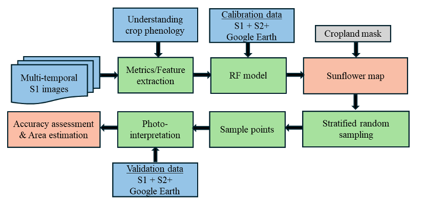
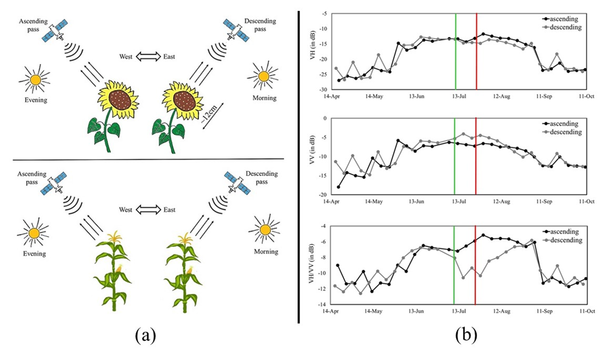
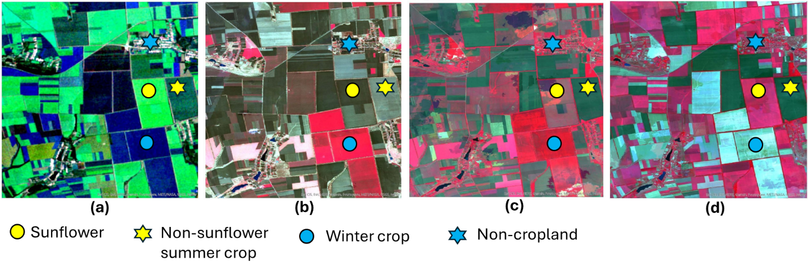

26 Crop Statistics using Weighted Area Estimators
26.1 Introduction
Accurate and timely agricultural production data are crucial for ensuring global food security. Traditionally obtained through agricultural censuses and field surveys, these data can be effectively complemented by open-access satellite Earth observations, which offer a cost-efficient means to monitor crops consistently across large spatial and temporal scales. However, precise crop-type identification (e.g., sunflower) from satellite imagery remains challenging in large, heterogeneous agricultural regions characterized by diverse crop types and variable field sizes [1].
Producing reliable national-scale crop maps requires high-quality satellite data, representative ground-truth samples for training, probabilistically selected validation datasets, and high-performance computing infrastructure. Traditionally, statistical area estimation and satellite-based crop mapping have been operated as independent processes. However, even highly accurate satellite-derived maps are unsuitable for area estimation due to biases introduced by misclassifications and mixed pixels. In contrast, sample-based ground-reference data provides unbiased estimators with quantifiable uncertainty. Recent studies have demonstrated the benefits of integrating these approaches to generate consistent crop area estimates at the national scale, for eg, soybean in the United States, Argentina, and South America; wheat in Pakistan; and Sunflower in Ukraine [2]. This integration not only enhances the reliability of agricultural statistics but also supports timely decision-making for food security and disaster response. However, obtaining high-quality field-based observations remains a major challenge, as ground surveys are often costly, time-consuming, and, in some cases, infeasible due to conflict, government restrictions, or logistical issues.
Therefore, the primary objective of this study is to estimate the national-scale sunflower planted area across Ukraine-controlled territories in 2023 using photo-interpreted labels derived from satellite imagery without field visits. Monitoring sunflower in Ukraine is critical because Ukraine is one of the largest producers and is also the most profitable crop. Furthermore, sunflower production has a significant impact on soil degradation due to the violation of crop rotation policies [3]. This study further demonstrates how the integration of synthetic aperture radar (SAR) data, machine learning algorithms, and statistically sound sampling frameworks can support operational sunflower monitoring in data-limited environments.
26.2 Methods
The overall flowchart of the proposed methods is shown in Figure 26.1 and is based on the methodology proposed in Qadir et al. [4]. The proposed approach consists of four major modules: 1) Understanding sunflower phenology using S1 SAR sensor; 2) Photointerpretation of S1 to obtain calibration and validation data; 3) Developing a Random Forest (RF) based model using S1 for sunflower mapping; 4) Sample-based unbiased sunflower area estimation.
26.2.1 Understanding sunflower phenology using S1 sensor
Sunflower’s distinctive architecture, characterized by broad leaves, yellow capitula, facilitates its discrimination from other summer crops such as maize and soybean when observed using C-band SAR sensor [3]. Another key feature of sunflower is heliotropism, the solar tracking of young leaves and buds. The plant follows the Sun from east to west during the day and reorients eastward at night through its circadian rhythm. Once flowering begins, this movement ceases, and the flower heads remain permanently oriented eastward (Figure 26.2), imparting a directional effect to the canopy.
Sentinel-1 (S1) operates at C-band (∼5.6 cm wavelength), which is comparable to the characteristic size of the sunflower flower head. Its sun-synchronous, right-looking antenna is
capable of monitoring sunflower phenology and directional effects. Over Ukraine, Sentinel-1 descends from north to south at approximately 04:00 UTC (07:00 local time) (Figure 26.2). Once flowering begins, the heads become permanently oriented eastward, facing the descending pass (fig-2-crop-area (a)). This eastward orientation (directional effect) introduces a strong scattering component, leading to increased VV backscatter and a corresponding decrease in the VH/VV ratio in C-band SAR observations (Figure 26.2 (b)). This phenomenon, unique to sunflower, enhances the separability of sunflowers from other summer crops like maize and soybean resulting in better performance with S1 data acquired in the descending orbit.

26.2.2 Photointerpretation of S1 to obtain calibration and validation data
Sunflower photo-interpretation was based on its distinct backscattering signature relative to other summer crops, particularly maize and soybean, during peak flowering. The directional behavior of the sunflower, captured by S1, is described above. To identify sunflower fields, seasonal median composites were generated from descending orbit data for three key crop-growing periods in Ukraine: spring (March-May), summer (June-August), and autumn (September-November). These composites were visualized by assigning red, green, and blue channels to VV backscatter from spring, summer, and autumn, respectively [4]. Sunflower exhibits high VV backscatter during summer (June-August) in the descending orbit compared to other summer crops. This results in dominant greenish tones for summer cropland (Figure 26.3 (a), yellow star), with sunflower fields appearing as bright neon green (Figure 26.3 (a), yellow circle).An example of the photointerpretation process used to label sunflower, non-sunflower, and non-cropland areas is shown in Figure 26.2 and also provided in the attached Google Earth Engine (GEE) application.
To identify other summer and winter crops as well as non-cropland areas, we integrated S1 with Sentinel-2 (S2) and high-resolution Google Earth data. For S2, bi-monthly median composites were created using the Near-Infrared (B8), Red (B4), and Green (B3) bands, assigned to red, green, and blue channels, respectively, for March-April, May-June, and July-August (Figure 26.3 b-d). The March-April composites are dominated by winter crops, May-June by both winter and spring crops, and July-August by summer crops, including sunflower. Crops during the peak growth stages gives high reflectance in the NIR band, resulting in dominant reddish tone and hence assist in identifying the specific winter or summer cropland. Non-cropland classes such as urban, water bodies, wasteland, and forest/plantation were identified using their stable spectral and backscattering signatures across the S1, S2, and high-resolution time series imagery.

In the end, each pixel was interpreted as sunflower, non-sunflower, and non-cropland class and subsequently employed either to train the ML based RF model or to generate a confusion matrix in terms of area proportions and subsequently estimate areas and accuracy values along with corresponding uncertainties as described in the following sections.
26.3 Random Forest model using S1 satellite data for sunflower mapping
The sunflower mapping methodology follows [4] and is based on the crop’s directional behavior. In the first step, we calibrated a Random Forest (RF) model using S1-derived metrics and photo-interpreted labels (Section 2). Calibration incorporated 42 multi-temporal metrics derived from S1 ascending and descending orbit data, which were processed separately to capture sunflower’s directional behavior characteristics.
The RF model was configured with 300 trees and default parameters for variables per split, minimum leaf population, and bag fraction. A two-phase classification strategy was implemented [4]. In the first stage, cropland was classified into six classes: sunflower, non-sunflower summer crops, winter crops, water, forest/vegetation, urban and barren. In the second stage, all non-sunflower and non-cropland classes were aggregated into a single class resulting in binary sunflower and non-sunflower classes. To minimize misclassification with non-cropland areas, we masked other land cover types using the land cover map. Isolated pixels were filtered, and the final sunflower map was projected to the Albers equal area projection for subsequent analyses.
26.3.1 Sunflower map validation and area estimation
The experimental design for sample-based sunflower area estimation followed well-established recommended practices [5] to derive unbiased area and uncertainty estimates at the national scale. Ukraine was divided into three classes: sunflower, non-sunflower cropland, and non-cropland to generate random samples. These three classes served as strata in a stratified random sampling design, with 20 × 20 m² pixels as sampling units. For estimating area and assessing accuracy of sunflower maps, we follow the recommended best practices for estimating accuracy of LUCC maps, using Cochran’s method for stratified random sampling [6] and then producing and area-weighted estimation as described in Olofsson et al.[5]. This estimation is described in detail in the “Map validation and use of maps for area estimation” chapter of this Handbook.
A confusion matrix was constructed from the samples to compute area proportions, which were then used to estimate overall, user’s, and producer’s accuracies and their standard errors. A target user’s accuracy of 0.85 was set for sunflower. In total, we selected 500 samples out of sunflower, non-sunflower cropland and non-cropland were represented by 200, 200 and 100 samples respectively. A working example of the sampling-based area estimation is provided in the Excel file described in the section “Code availability” below.
Each sample was labeled independently through photointerpretation of multi-temporal SAR composites (S1), optical false-color composites (S2) (shown in Figure 26.2) and also very high-resolution Google Earth Engine imagery, as can be see in the link to Google Earth Engine.
26.4 Results & Discussion
We estimated the sunflower planted area in Ukrainian-controlled territory to be 5.99 ± 0.25 million hectares (Mha) in 2023, compared to 5.66 Mha obtained based on pixel counting. Unlike simple pixel counting which assumes that each mapped pixel is classified correctly, the area estimation method incorporates the confusion matrix to adjust for classification errors, thereby providing unbiased estimates of class areas and their associated confidence intervals. The sunflower map for Ukraine in 2023 is shown in Google Earth Engine.
Table 26.1 shows the confusion matrix in terms of area proportions along with per-class performance metrics: producer’s accuracy (PA) and user’s accuracy (UA). Overall, per-class PA/UA values were close or higher than 90%, reflecting high classification reliability and supporting robustness of the sunflower area estimates. Consequently, the sample-based estimation approach yielded higher precision and greater statistical validity than the pixel-counting method, which can otherwise underestimate or overestimate true area extents depending on misclassification rates.
| Reference | ||||||
|---|---|---|---|---|---|---|
| Map | Class | Sunflower 2023 | Non-sunflower cropland | Non-cropland | UA | PA |
| Sunflower 2023 | 0.11 | 0.0002 | 0.00 | 0.97 | 0.91 | |
| Non-sunflower cropland | 0.01 | 0.38 | 0.04 | 0.88 | 0.96 | |
| Non-cropland | 0.00 | 0.01 | 0.44 | 0.97 | 0.91 |
26.5 Conclusion
This study demonstrated the operational capability of SAR data for sunflower area estimation without relying on field observations at the country level. The directional behavior of sunflowers as detected by S1 data, plays a crucial role in their identification and mapping. By integrating sampling-based approach in crop area mapping, the disparity between the sampling-based area and classified area is substantially reduced.
To create the reference classification for labeling each sampling unit, a combination of S1 and S2 data from Copernicus open archive, together with Google Earth provides a source of cost-free reference data equivalent to field observation required for sunflower identification. By combining the multi-source high resolution optical with SAR, along with Google Earth data ensures the process of creating the sunflower reference classification is of higher quality than the sunflower classification-based map-making process and is aligned to the good practice recommendations.
The proposed method has certain limitations, particularly in regions where only the S1 ascending orbit is available. Our analysis in [4] showed that in regions where only ascending orbit data exist, the model achieved lower accuracy compared to regions with both or only descending orbit coverage. Additionally, this approach relies on satellite acquisitions available only until the end of August and therefore cannot be applied for early-season sunflower identification or area estimation.
Care should be taken when implementing this model to other regions, as the accuracy of the resulting sunflower maps is affected by the choice of non-cropland mask. When using land cover/cropland masks, it is critical to assess their suitability for the specific application, taking into account the purpose of use, such as broad-scale ecosystem accounting versus site-specific change detection. Users should also consider trade-offs between thematic resolution, global versus local accuracy, and class-specific biases when selecting appropriate land cover datasets.
Furthermore, photo-interpretation to identify sunflower fields is based on expert knowledge of both SAR and optical data, which may vary among interpreters and across regions due to differences in crop cycles, crop types, and agroecological conditions. Therefore, caution should be exercised when applying this approach to other regions, particularly in smallholder farming systems where sunflower is not a dominant crop and photo-interpretation has its own challenges.
References
[1]
X.-P. Song et al., “National-scale soybean mapping and area estimation in the United States using medium resolution satellite imagery and field survey,” Remote Sensing of Environment, vol. 190, pp. 383–395, 2017, doi: 10.1016/j.rse.2017.01.008.
[2]
A. Qadir, S. Skakun, I. Becker-Reshef, N. Kussul, and A. Shelestov, “Estimation of sunflower planted areas in Ukraine during full-scale Russian invasion: Insights from Sentinel-1 SAR data,” Science of Remote Sensing, vol. 10, p. 100139, 2024, doi: 10.1016/j.srs.2024.100139.
[3]
A. Qadir, S. Skakun, J. Eun, M. Prashnani, and L. Shumilo, “Sentinel-1 time series data for sunflower (Helianthus Annuus) phenology monitoring,” Remote Sensing of Environment, vol. 295, p. 113689, 2023, doi: 10.1016/j.rse.2023.113689.
[4]
A. Qadir, S. Skakun, N. Kussul, A. Shelestov, and I. Becker-Reshef, “A generalized model for mapping sunflower areas using Sentinel-1 SAR data,” Remote Sensing of Environment, vol. 306, p. 114132, 2024, doi: 10.1016/j.rse.2024.114132.
[5]
P. Olofsson, G. M. Foody, M. Herold, S. V. Stehman, C. E. Woodcock, and M. A. Wulder, “Good practices for estimating area and assessing accuracy of land change,” Remote Sensing of Environment, vol. 148, pp. 42–57, 2014, doi: https://doi.org/10.1016/j.rse.2014.02.015.
[6]
W. G. Cochran, Sampling techniques. John Wiley & Sons, Ltd, 1977.